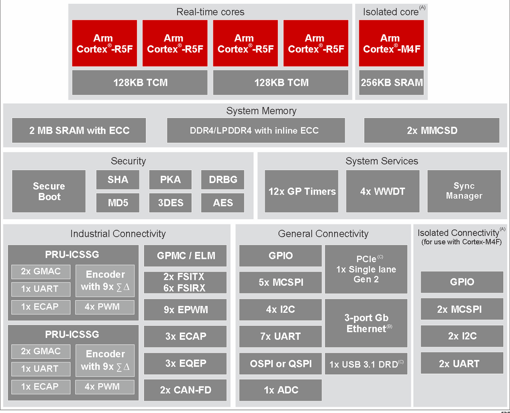
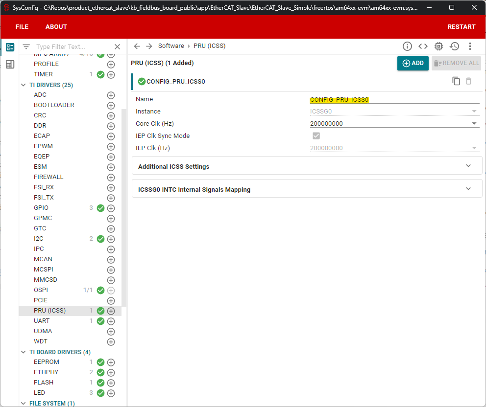
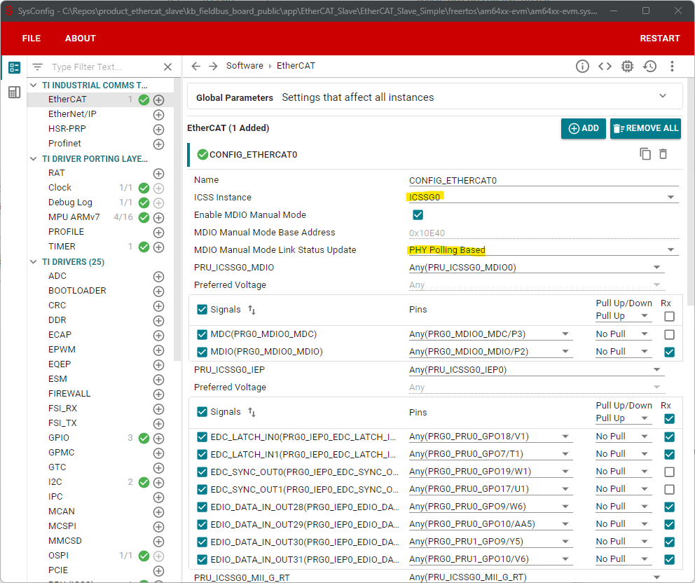
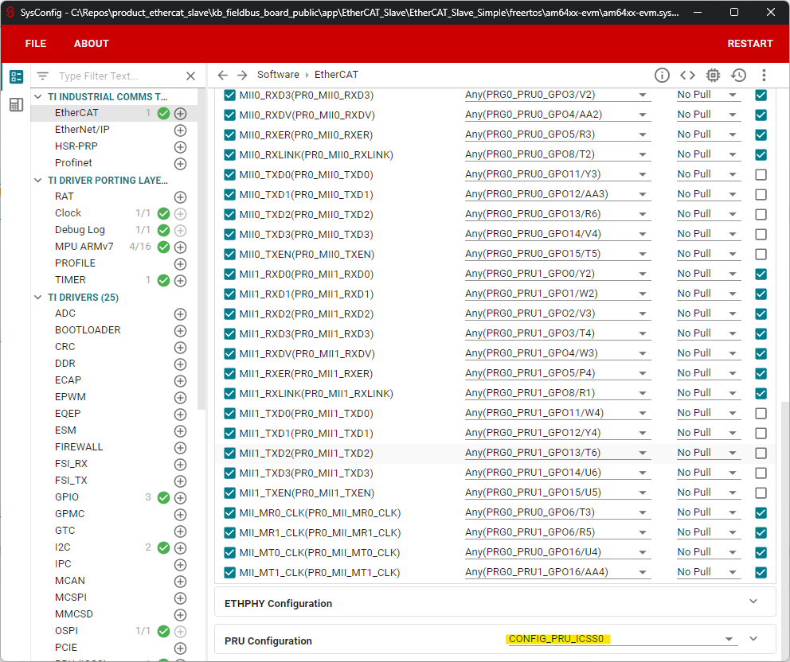
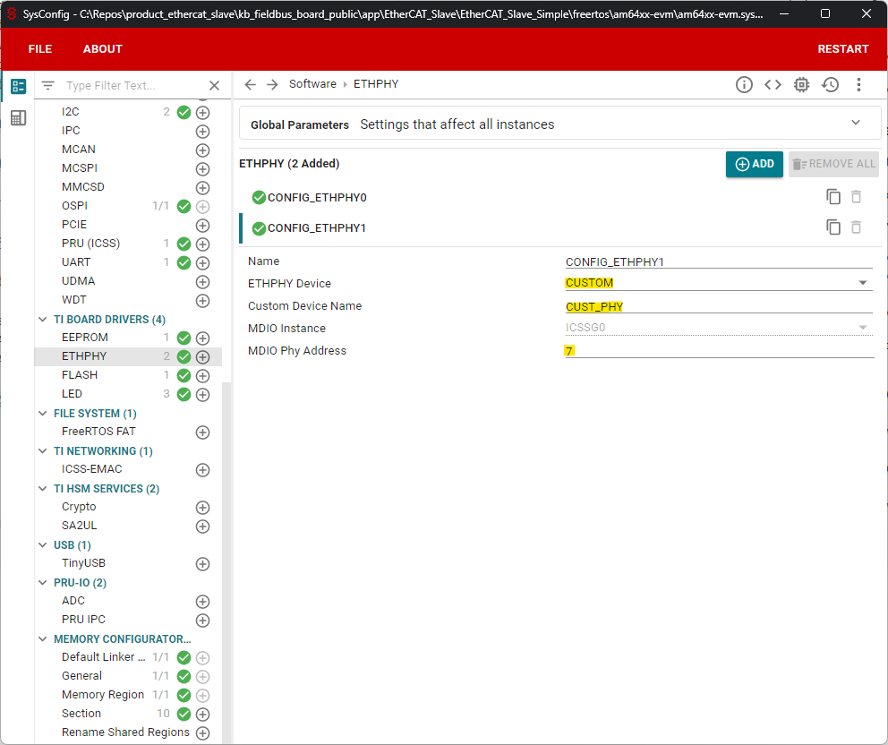
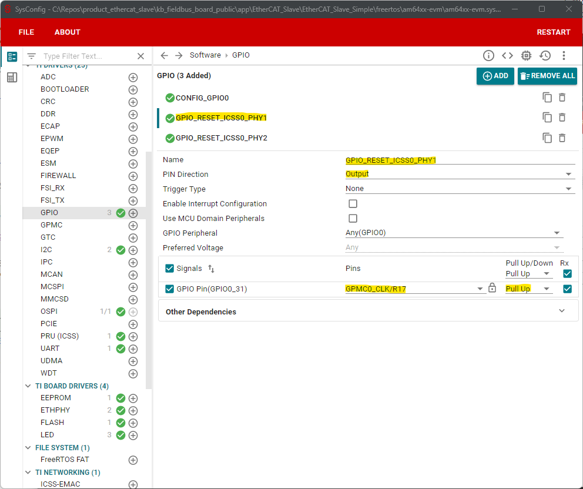
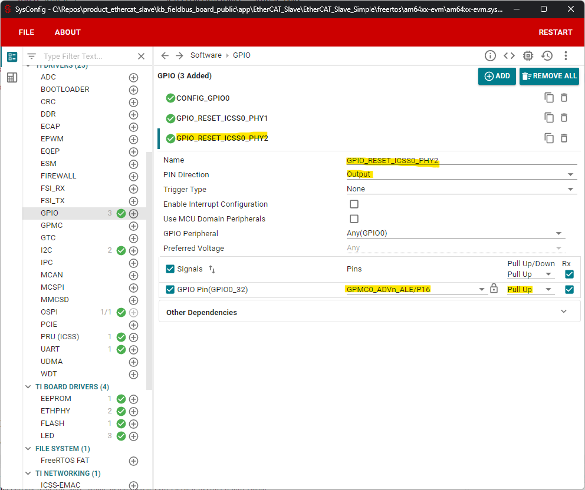
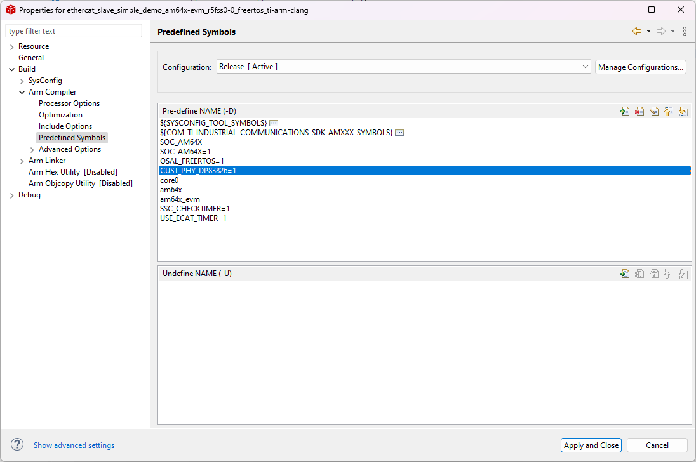
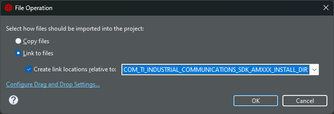

EtherCAT Slave |
 |

|
EtherCAT Slave |
|
|
AM64X extends Sitara’s industrial-grade portfolio into high-performance microcontrollers. The AM64X device is designed for industrial applications, such as motor drives and remote I/O modules, which require a combination of real-time communications and processing capabilities.
The AM64X family offers scalable performance with up to two instances of Sitara’s gigabit TSN-enabled PRU_ICSSG. For more information, refer to the "Programmable Real-Time Unit Subsystem and Industrial Communication Subsystem - Gigabit (PRU_ICSSG)" section in the Processors and Accelerators chapter of the device TRM.
This document serves as a guide for using the PRU_ICSSG0 instance in the PRU_ICSSG peripheral. On EVMs supported by TI (AM64X-EVM, AM243X-EVM), it is not possible to use the PRU_ICSSG0 instance, as the PRG0_RGMII1 and PRG0_RGMII0 pins are not connected to Ethernet PHYs on those EVMs. A dedicated custom board is required to utilize the PRU_ICSSG0 instance of the ICSSG peripheral. The PRU_ICSSG1 instance of the ICSSG peripheral does not have these limitations.
This document provides a setup guide for bringing up the PRU_ICSSG0 instance on a custom board or an ICSSG0-enabled device.
On AM64X, out-of-the-box support for ICSSG0 is not available.

In the "TI Drivers" section, select the "PRU (ICSS)" module and change the following:

In the "TI Industrial Comms Toolkit" section, select the "EtherCAT" module and change the following:


In the "TI Board Drivers" section, select the "ETHPHY" module and change the following:

For this example, a custom board with two DP83826E PHYs is used.
In addition to the modifications in the previous chapter, the following changes must be made:
In the "TI Board Drivers" section, select the "ETHPHY" module and change the following:
In the "TI Drivers" section, select the GPIO section and add the following GPIO's:


In Code Composer Studio, right click on the project and choose "Properties". Under "Build" → "Arm Compiler" → "Predefined Symbols", add the following symbol:

In the Industrial Communications SDK directory, navigate to "/examples/industrial_comms/custom_phy/src/". Select "CUST_PHY_dp83826e.c" and drag and drop it into the project in the Project Explorer. Following window appears, asking how to import the file to the project. Adopt these changes:

The initialization routine of DP838261E PHY is different to the DP83869 PHY. Following code must be added to the example code. It can be placed in "ecSlvSimple.c", at the end of the function "EC_SLV_APP_SS_initBoardFunctions()".
In the file "ESL_BOARD_config.h", adapt the defines as follows:
In the file "ESL_BOARD_OS_config.h, adapt the defines as follows:
 1.9.8
1.9.8